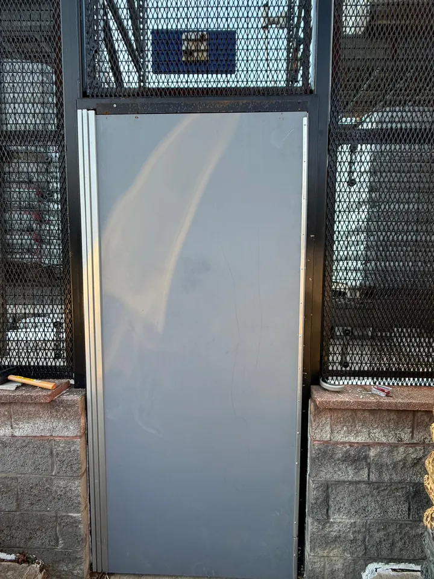

Commercial glass door repair
Emergency commercial door repair in Alexandria, VA
A stuck or unstable entrance needs attention before normal use.
- Commercial door repair
- Hardware and locks
- Storefront glass support
Tell us how the door is failing
Is the door stuck open, dragging on the threshold, failing to latch or moving loose glass? These symptoms can involve pivots, hinges, closers, locks or the surrounding frame. Call with the exact issue and whether the entrance can be kept clear.
Capital Glass and Door Services handles commercial door repair for Alexandria, VA, Arlington, VA and Washington, DC, with further service-area details linked below. Ask about current availability for your location.
Protect people and describe the full opening
Keep customers away from an unstable door or loose glazing. Avoid forcing the leaf, removing a pivot or adjusting an unfamiliar exit device. Tell the property contact about an affected entrance and discuss another usable route where available.
If the opening was forced during a break-in, include damage to the strike, cylinder and frame. If glass is missing, temporary board-up and a glass replacement plan may also be needed.
What affects the repair plan
Hardware compatibility, door weight and condition, frame alignment and parts availability affect the scope. Some faults can be addressed through adjustment; others need replacement parts or additional frame work. No final diagnosis or repair time can be given from a symptom alone.
For a nonurgent assessment, WhatsApp photos of both sides of the door and any readable hardware label. Add the address and ZIP code, business or home type, urgency and the person who can approve access.
Photos from our previous door and hardware work


Call or WhatsApp: which should you use?
Call vs WhatsApp
Active hazard or broken glass right now? Call. Not urgent or want a quote? Send a photo on WhatsApp.
Keep people away from damaged glass. Take photos only from a safe position.
What to send on WhatsApp
- A photo of the damage
- Your address and ZIP code
- Business or home
- How urgent it is
Questions before you call
Can you repair a commercial glass door that will not close?
Commercial door repair is a service category. Call with the symptoms, location and access details so availability and an assessment can be discussed.
Can a broken pivot be diagnosed from a photo?
Photos help identify the visible hardware, but the door and frame need assessment to confirm the cause and a suitable repair.
Will a door repair include glass replacement?
Only if glass work is included in the agreed scope. Mention cracked or missing glass when you call so it can be discussed alongside the door issue.
Related reading and service pages
Tell us what happened to your storefront
Call Capital Glass and Door Services at +1 202-643-4062, or send damage photos and your location on WhatsApp. Ask about availability, the repair scope and what happens next.